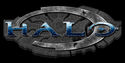

De: La Frikipedia, la enciclopedia extremadamente seria.
De: La Frikipedia, la enciclopedia extremadamente seria. De: La Frikipedia, la enciclopedia extremadamente seria.
«Con Halo estoy que me la halo»
~ Pajero segundos antes de su entrenamiento diario
«Palo es casi tan bueno como cortarse las venas»
~ Emo jugando Halo
«Corred»
~ Grunt en una situación normal
«Qué difícil es esto»
~ Gilipollas que no puede pasar el juego en fácil
«Haceme un petardo hija de puta Crepes»
~ Pepe Cabestro hablando con Catana después de una orgía fiesta
«Aaarghhh…»
~ Elite siendo machacado por 117
«Comete esto...»
~ Marine dandole polla alimentando a un grunt
Videojuego creado por la compañía de Punkie. Principalmente iba a ser lanzado para la Play Station 2, pero un fanático entró a las oficinas de Punkie y les amenazó con follarse a sí mismo enfrente de su hija de dos años. Así que lo lanzaron para el Xbox, porque él no tenía otra consola y no quería comprar la Play Station 2 porque era un puto vago no tenía plata (de seguro se lo pediría a su mamá).
Estamos en el año 2552.435 (y contando), en ese año la humanidad de ahora ya se había extinguido (bueno en realidad no pero en este juego los únicos humanos que salen son los marines), y nuevos humanos habían aparecido en ese entonces (bueno en realidad no pero había extraterrestres que te joden). La historia comienza cuando Bill Puertas compró la tierra y varios planetas de la Vía Láctea, total, Bill Gates con su nuevo planeta tenía ganas de hacer lo que quisiera con La Tierra, luego creó una organización formada por puros marcianos pitudos llamada el Impacto (o el Parto, como le quieras llamar) que se dedica a adorarlo como un dios y matar en su nombre.
Después de la aparición del Impacto J-31, enfurecido, fue a la tierra para que los marines hicieran a las copias baratas de J-31, hocea, los spartans de mierda para que pudieran vencer a Bill Gates y el Impacto.
Debido a las pérdidas sufridas el almirante del UNSC (United Nazis Stupids Comand) Verginceprestoncolix decretó estos puntos:
Es el proyecto para crear súperpendejossoldados a base de anfetaminas, porros y cacharros (como ordenó el capitán). Se crearon más de 500, aunque Espartan-117 (John, el puto amo del juego) fue el único pinche suertudo petardo que sobrevivió. Su misión original era madrearse a todo Güey que se revelara contra el gobierno de la UNSC pero cuando Vil Puertas creó al Parto fue enviado a misiones para cargarse a todos los marcianos que encontrara.
Son lo mejor, van con armaduras chulas sin ventilación (a lo Pavo Ranger) pero más chingonas recién compradas y equipadas con DALAI, llevan un coctel de anfetas que les deja tiesos (y se los deja tieso) y duermen en un congelador.
Tras varios despliegues de prueba volvieron a hacer una micción. Pero mientras estaban en la estación, el Parto bombardeó y mató a todos los Espartans menos uno, que no se subió a la nave porque meaba en los pasillos. Y adivina quién fue.
El Capitán del Pilar Del Logroño (Jacobo Crêpes en la versión española y francesa y Jacobo Petes en la versión americana y latina) que cobró fama de héroe al salvar una nave de mando, lo que hizo fue dejar que la nave luchase mientras él subía en una cápsula a la nave de mando con una de las nuevas IAD (del capitán), matándose a pajas (cosa que hizo que medio maldito planeta le siguiera por el olor).
Le premiaron con el Pilar Del Logroño (o Pilar del Atún), aunque los que quedaron en la nave murieron de la nada, por ser tan pendejos.
Al final murió siendo absorbido, después de una indigestión por un food que lo absorbió para que Espartan-117 pudiera sacarle el dildo la interfaz neural pirata que llevaba en la cabeza, por una cosa morada (creo que era Barney).
Desde el principio la misión de los Espartans no tenía ninguna esperanza, por eso el UNSC (Llámalo MENÚ, el Mando de Estúpidos Nazis Unidos) decidió enviar el equipo menos caro: entre ese equipo figura Catana, la inteligencia pornográfica del Pilar Del Logroño.
Fue creada para tomar pedidos en los McAutos Fastfoodners (siga leyendo para mas información), pero aceptaron su petición de alistarse (básicamente por los yonquis que iban al McDonalds, que si por lo menos fuesen Jevis).....
La cuestión es que la enviaron al Pilar Del Logroño, ya que demostró tener buena puntería, unas tetas enormes como le gustan al Jefe talento para resaltar lo jodido que lo tienen todos y un 90 60 90 ideal para motivar a los Marines esos.
El Parto, un colectivo de alienígenas ha empezado una campaña violadora contra la humanidad, llamados así porque todos los humanos violados mueren y salen huevos de alienígenas en sus anos. Usando sus pollas llenas de escamas, empiezan a dar por culo a los humanos del MENÚ. Al mando del Pilar Del Logroño el capitán Jacobo Crêpes debía cumplir la misión escapar de Reach con Catana, que contenía datos de Kamasutra que el Parto desconocía. Deciden llevarla al Anillo vibrador (conocido como Halo por el Parto) para conseguir los condones de plasma que 343 Gil Espork tiene en la Sala de Placer Control y protegerse del Parto. Así despiertan al Jefe Maestro con un golpe en la cabeza sacándolo de la cápsula de Marihuana que te da un colocón que no despiertas en varios años... y después se lleva al Preservativo donde han escondido a Catana para que el Parto piense que es un condón de plástico en vez de una putilla holográfica. Se larga en autobús barato una nave de escape porque no tenían cojones de quedarse en la puta nave con unos Marines más débiles que su madre. Al final bajan al Anillo de Sauron a por los condones de plasma.
Johnki se sube a una cápsula con Catana, junto con la peña de Marines y les falla el aire acondicionado el freno de mano y se estrellan (¿es que nadie sabe aterrizar estos trastos?) en Palo. Mientras el Chef busca a otros Marines para que le cubran el culo de los enanitos esos, Crêpes aterriza de milagro el Pilar Del Logroño. El Parto coge prisionero a Crêpes, suponemos que para que cante la información (aunque lo único que le cantaba era el aliento) y para tenerlo como esclavo sexual. Al final, Master Chef salva a una peña de 299 Marines (Si le sumamos al Spartan-117 tenemos a 300) y son rescatados por un Pelícano (el animal no, el avioncete ese del MENÚ)
En vista de que están atrapados deciden rescatar a Crêpes mientras se van reagrupando, pero el tío tiene que estar prisionero en una nave del Parto, el Verdad y Reconciliación (Mentira y Odio en el informe presentado por el Master Chef al MENÚ) a 300 m de altura, que si no, no está contento el señorito. Si es que...
Para solucionar el problema, deciden pegarse unas alas en la espalda, pero como no funciona llaman a "Martillo" (Pelican Hecho 1,2O4 veces, lo derribaron al menos 50 veces), el cual trae a unos cuantos Jebis con ganas de bulla para arreglar las cosas con cara de calamar esos se hacen una paja tumbados en una hamaca de plasma (en el Parto TODO es de plasma). Los Marines se lian a matar tios a lo pro mientras que el Master Chef campea con el sniper y un camuflaje activo (una ventaja del Parto para ser invisible y violar a tu enemigo sin que te vea). Llegan a las celdas y rescatan a Crêpes,y este dice que oyó a los guardias decir: "Palo eess uunn aaaaarmaaaaa, peeeeerrrrooooooo quuuuuueeeee noooooooooo seeeeeeeeee eenteren loooooos priiiiisiiioneeeroooos, queeeee yaaaaa nooos faaaltaa poooocooooo paraaaaa daaaaar cooon laaa saaalaaa deee cooontroooool".
Para mí que era una trampa para encontrar la sala de control, pero bueno.
Al final se pillan un vehículo del Parto que tiene forma de tenedor de dos puntas.
Vas en un Pelican de marras con cinco Marines, pero luego en la playa hay como quince (¿WTF?). Tras desembarcar en una isla del tamaño de los servidores de la Frikipedia pequeña, encuentran la Guía Campsa del Parto que 'ice que se pué' llegá' al Cartógrafo ese con un Guarro... perdón, Warthog, y que éte sape a 'onde etá la Sala de control esa. Cuando llega al Cartógrafo ese acompañado por dos Marines en un Warthog, descubre que los 'joputas del Parto han cerrado la puerta con llave y el Jefe tiene que ir a buscarla. Como cansa mucho ir al otro lado de la isla, meterse dentro de la isla esa, entrar en otra urbanización Fastfoodner y coger las llaves, coge un "Lanzapepos" y revienta la puerta. Descubre que el Cartógrafo está a cinco pisos bajo tierra y no hay ascensor por que lo construyeron los Fastfoodners de la OGT (Obreros sin Ganas de Trabajar). Como llevaba un sobrescudo del Parto para protegerle temporalmente de penetraciones y otras putadas y le daba palo bajar piso por piso matando Grunt, Elites y Jackals, se tira a lo loco por el barranco, pero se queda al mínimo de energía. Se pilla otro sobrescudo y activa el Cartógrafo. Después vuelve a subir los cinco pisos a patita y al doblar una esquina se encuentra con un Elite Cani (Zealot en lengua Elite), un Líder Elite con armadura de oro y espada reggaetonera de plasma. Este se puso a bailar reggaeton, bajando los escudos del Jefe al mínimo, y tras decirle: "BrOër, tIèNé fÛéGô?", el Jefe se cabreó tanto que hizo una patada giratoria de Chuck Norris reventándole las cuatro mandíbulas. Después, quemó su cadáver con el mechero que no le ofreció amablemente al Zealot. Entonces se montan en el Pelican ese y se van a un bujero que habia en la isla (que dificil que era encontrar la sala esa, no?). Se van por unos túneles y salen a la nieve. se vuelven a meter en unos túneles y encuentran un ascensor (esta vez no lo construyó la OGT). Entonces vuelven a salir a la nieve y se encuentra el Jefe con la peña de Marines. Después de matar aliens del Parto, se pilla un tanque y se pone a atropellar enanitos y a convertirlos en pequeños trozos de órganos. Después se meten en otro McDonalds Fastfoodner y se mete el Master Chef en un ascensor que va pa' rriba. Después de pasar tres veces por sitios iguales, se pilla un avioncito de el Parto y encuentra la Sala de Control. En total se encuentra con cuatro Elites Canis (Zealots)
Catana descubre la verdad: Palo es un anillo vibrador Fastfoodner que causa tanto placer a la galaxia que la destruye, y como hay que hacer algo, envía a Espartan-117 a impedir que Crêpes entre en el lugar indicado por la Guía Campsa del Parto. Va corriendo como una exhalación y llega a un pantano. Pero cuando llega descubre que hay unos bichos raros... Así que se pone a matarlos.
los bichos raros se llaman Food, cuando matas a uno nacen dos y encima convierten a la gente en zombi, por lo que a partir de aquí el juego se empieza a llamar "Resident Halo".
Pero cuando sube arriba tras fracasar en la búsqueda de Crêpes se encuentra con que la instalación está rodeada por los bichos esos. Así que va saliendo hasta una torre y mueren los Marines (hombre claro! son marines, no infantería, corcho), y gilipollas, como vimos con el cartógrafo previamente mencionado. Pero de repente alguien le teletransporta a una biblioteca... Porque nunca un cybergay...
Según Gil Spork, los Food son basicamente calamares defectuosos que trabajaban para los Fastfoodners en sus fábricas de hamburguesas. Pero... los pulpitos se rebelaron y se los comieron. En vista de esto, los Fastfoodners crearon 7 palillos en 1111111111111 años (un humano tardaría 2 días), y uno de ellos en en el cual se han metido la gran ostia Espartan-117 y Catana
Entonces a lo que íbamos: en último recurso activaron los anillos y todo acaba bien (si por bien entiendes la destrucción de todo el universo y sus formas de vida).
Bueno, 343 le hace enfrentarse a Espartan contra 1.000.000 de foods para conseguir el Píndice (o Icoño), provocandole las consecuencias que aquí se listan:
Los Food comen a todo dios y lo convierten en Food. Y al activar los palillos lo que pasa es que le envía un mensaje de Paz y Amor a Jorge Arbusto, el cual se caga en sus muertos y peta todo el mundo.
Con estos conocimientos, Master Chef culea a Chispa Culeable 343, pero el cabrón lo amenaza con un vibrador si no le da el Píndice (o Icoño), por lo que Catana le quita el Píndice y le manda a tomar por culo otra vez por regaetonero.
Tras descubrir el "asunto" catana decide mandar al Espartan 117 ni modo que 118 idiota a parar la operación destruyendo los generadores de pulsos, pero 343 saca a unos robots llamados Cenicientas, los cuales usaban los Fastfoodners para asar la carne y asar a los que atracaban.
Tras petar el último se van a parar al "Cesad y reconciliaos", donde hay una batalla cruel: Marines, Parto, Food, Cenicientas y encargados de la limpieza en una guerra sin cuartel por salir como sea de la mierda de palillo.
Al salir de la nave se encuentra a Jacobo, convertido en Food. El Jefe le da una ostia por andar de buscón en un palillo desconocido, le quita la interfaz neural de Cyberjesús y le deja ahi que se pudra.
El capullo en que llegaste...
Por fin, vuelves al Pilar Del Logroño para hacer una sobrecarga en el núcleo de fusión (tu has entendido algo?). Pero 343 ya está ahi con los Cenicientas, aparte de los Food y el Parto.
Tras mucha guerra, activa la cuenta final, pero el 343 le pincha los datos y tiene que colar una Granada o un Lanzanahorias (basta con coger un Grantno y meterlo en uno. Así se hace, así arde) en los colectores de la nave para que funcione la cuenta atrás.
Ahora tiene que salir petado en un Guar... esteeeee Warthog y los idiotas del Parto intentan apagar el fuego con toallitas húmedas, porque Martillo fué derribada por 2 Vánsis. Llega al hangar y por fin el Jefe sube a un caza Lonsuó y huye con Catana al País del Nunca Jamás...
Existen varias armas y vehículos de las dos razas:
Armas Humanas:
Vehiculos Humanos:
Armas Del Parto:
Vehiculos Del Parto:
Una de las mayores críticas del juego fue la falta de traducciones a distintos idiomas en Halo Wombat Envuelto, y la traducción al Español por parte de Mexicanos en Jeilo Tú, los Gallegos empezaron a llamar al Jefe Maestro como el Jefe Mariachi y a Catan como Pepita Garganta Profunda.
Al parecer para la tercera entrega Halo Trío pretende incluir dos versiones del Español, una en Gallego y otra en Mexicano. Se rumorea que la versión en Gallego va a tener una armadura especial de torero que le dará poderes para poder hacer que el Irreal Madrid gane la Champion, por otra parte en la versión Mexicana el Jefe Mariachi podrá destruirlos a todos con una serenata al más vívido estilo Azteca. NOTA: Esta parte no tiene que ver con el juego y se puede saltar si no se quiere sufrir de ceguera.
Son un chingo de videojuegos que completan la saga de Halo:
|  | |
|
Videojuegos
Personajes
Enemigos
|
Autor(es):